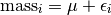
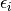
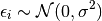
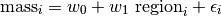
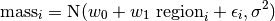
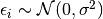
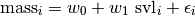
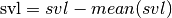

Bayesian linear regression in R¶
Note
A prior distribution does not necessarily imply a temporal priority, instead, it simply represents a specific assumption about a model parameter. Bayes rule tells us how to combine such an assumption about a parameter with our current observations into a logical, quantitative conclusion. The latter is represented by the posterior distribution of the parameter (see [Kery10], page 17).
A prior may be uninformative for a data set, but upon transformation with say log the assumptions about a prior may no longer hold.
A bit more on the model of the mean¶
mass,pop,region,hab,svl
6,1,1,1,40
8,1,1,2,45
5,2,1,3,39
7,2,1,1,50
9,3,2,2,52
11,3,2,3,57
read-data
## read in the data
data <- read.csv("./bayesian-course/snakes.csv",header=TRUE,sep=',')
attach(data)
## use factors where values are not quantitative
pop <- as.factor(pop)
region <- as.factor(region)
hab <- as.factor(hab)
[1] "..."
In the previous example we just fit a common mean to the mass of all six snakes. In R again this is written as:
show-lm
print(lm(mass~1))
[1] "..."
Call:
lm(formula = mass ~ 1)
Coefficients:
(Intercept)
7.667
This implies a single covariate with a single value for each snake. This means that the mass of individual snake  is represented as an overall mean plus some deviation.
is represented as an overall mean plus some deviation.

The individual deviation is called . This is also called the residual for snake . We are going to assume a distribution for these residuals.

Behind the scenes when we run lm R is creating something called a design matrix. It is a very important function that helps us understand what is going on.
show-design-matrix
print(model.matrix(mass ~ 1))
[1] "..."
(Intercept)
1 1
2 1
3 1
4 1
5 1
6 1
attr(,"assign")
[1] 0
t-test¶
If we are interested in the effect of a single binary variable like region on mass we can use a t-test.
lm-ttest
print(summary(lm(mass~region)))
[1] "..."
Call:
lm(formula = mass ~ region)
Residuals:
1 2 3 4 5 6
-0.5 1.5 -1.5 0.5 -1.0 1.0
Coefficients:
Estimate Std. Error t value Pr(>|t|)
(Intercept) 6.5000 0.6614 9.827 0.000601 ***
region2 3.5000 1.1456 3.055 0.037841 *
---
Signif. codes: 0 ‘***’ 0.001 ‘**’ 0.01 ‘*’ 0.05 ‘.’ 0.1 ‘ ’ 1
Residual standard error: 1.323 on 4 degrees of freedom
Multiple R-squared: 0.7, Adjusted R-squared: 0.625
F-statistic: 9.333 on 1 and 4 DF, p-value: 0.03784
This can be written as:

So under this model the mass of snake is made up of three components. We use the same Gaussian (normal) distribution assumption about residuals.

If we assume  then we should test for normality of the individual residuals when using a t-test.
t-test-design-matrix-effect
model.matrix(~region)
[1] "..."
(Intercept) region2
1 1 0
2 1 0
3 1 0
4 1 0
5 1 1
6 1 1
attr(,"assign")
[1] 0 1
attr(,"contrasts")
attr(,"contrasts")$region
[1] "contr.treatment"
The indicator variable region2 contains a 1 for the snakes that are in region 2. Region 1 becomes a base level and we see the effect of region 2 compared to region 1. The value of the intercept is then the mean mass of snakes in region 1. This setup is known as the effects parameterization. An equivalent way to look at differences in regions with respect to mass is to reparameterize the model as a means parameterization.
t-test-design-matrix-means
print(model.matrix(~region-1))
print(lm(mass~region-1))
[1] "..."
region1 region2
1 1 0
2 1 0
3 1 0
4 1 0
5 0 1
6 0 1
attr(,"assign")
[1] 1 1
attr(,"contrasts")
attr(,"contrasts")$region
[1] "contr.treatment"
Call:
lm(formula = mass ~ region - 1)
Coefficients:
region1 region2
6.5 10.0
The effects parameterization lets us test for differences for means between the two regions and the means parameterization lets us report the expected mass of snakes for each region. They are equivalent models.
Simple Linear Regression¶
To examine the response between a continuous response variable mass and a continuous explanatory variable svl. We use simple linear regression.

The difference between this and a t-test is in the contents of the explanatory variable. Here is the design matrix.
linreg-design-matrix
print(model.matrix(~svl))
[1] "..."
(Intercept) svl
1 1 40
2 1 45
3 1 39
4 1 50
5 1 52
6 1 57
attr(,"assign")
[1] 0 1
Download: LinearRegression.rnw
\documentclass{article}
\usepackage{amsmath,graphicx}
\title{Bayesian Linear Regression}
\date{\today}
\author{S. Gamgee}
\begin{document}
\SweaveOpts{concordance=TRUE}
\maketitle
\section{Snake data}
The snake data are borrowed from \cite{Kery10} (page 68). This is where we discuss the data a bit.
\scriptsize
<<read-data>>=
## read in the data
data <- read.csv("snakes.csv",header=TRUE,sep=',')
attach(data)
print(names(data))
print(summary(data))
## use factors where values are not quantitative
pop <- as.factor(pop)
region <- as.factor(region)
hab <- as.factor(hab)
@
\normalsize
Several of the variables are categorical (nominal).
We tell R about this by converting them to a factor with the function \texttt{as.factor}.
Remember that any functions can be looked up with a preceeding \texttt{?}.
\scriptsize
<<plot-mass-vs-svl>>=
## plot it
pdf("snakes-mass-svl.pdf",height=6,width=6)
plot(mass~svl,col='blue',main="mass vs svl",type='p')
dev.off()
@
\normalsize
\begin{figure}
\begin{center}
\includegraphics[ext=.pdf,scale = 0.3]{"snakes-mass-svl"}
\end{center}
\caption{a caption}
\end{figure}
\section{Simple Linear Regression}
\begin{equation}
\textrm{mass}_{i} = w_{0} + w_{1} \textrm{ svl}_{i} + \epsilon_{i}
\end{equation}
\scriptsize
<<write-model>>=
## specify the model
cat("model{
# priors
sigma ~ dunif(0,100) # populaiton sd
tau <- 1 / sigma * sigma # Precision = 1 / variance
w0 ~ dnorm(0.0,1.0E-4)
w1 ~ dnorm(0.0,1.0E-4)
# likelihood
for(i in 1:N){
mu[i] <- w0 + w1*(x[i])
mass[i] ~ dnorm(mu[i],tau)
}
}
",fill=TRUE,file="linear-regression.txt")
# bundle data
jagsData <- list(mass=mass,x=svl,N=length(mass))
@
\normalsize
\scriptsize
<<mcmc-setup>>=
# inits function
inits <- function(){list(w0=rnorm(0,2),
w1=rnorm(0,2),
sigma=runif(1,1,30))}
# Parameters to estimate
params <- c("w0","w1","mu","sigma")
## parameters for MCMC sampling
nc <- 3 # Number of Chains
ni <- 5000 # Number of draws from posterior (for each chain)
nb <- 200 # Number of draws to discard as burn in
nt <- 2 # Thinning rate
@
\normalsize
\scriptsize
<<model-fit-mcmc>>=
## run it
library(R2jags)
jagsfit <- jags(jagsData,inits=inits,parameters.to.save=params,
model.file="linear-regression.txt",n.thin=nt,
n.chains=nc,n.burnin=nb,n.iter=ni)
@
\normalsize
\scriptsize
<<plots-and-output>>=
## plot the chains
jagsfit.mcmc <- as.mcmc(jagsfit)
pdf("linear-regression-chains.pdf")
xyplot(jagsfit.mcmc)
dev.off()
pdf("linear-regression-densities.pdf")
densityplot(jagsfit.mcmc)
dev.off()
## print results
print(jagsfit['BUGSoutput'])
print(lm(mass~svl))
msvl = svl - mean(svl)
print(lm(mass~msvl))
@
\normalsize
\begin{thebibliography}{1}
\bibitem{Kery10} M. Kery. {\em Introduction to WinBUGS for Ecologists}, Elsevier Academic Press, 2010.
\end{thebibliography}
\end{document}
Which parameterization to use¶
linear-reg-effects-in-R
print(lm(mass~svl))
[1] "..."
Call:
lm(formula = mass ~ svl)
Coefficients:
(Intercept) svl
-5.5588 0.2804
The intercept has little meaning as it says that a snake of length 0 weight -5.6 units. We can give the model a more relevant meaning by transforming svl

linear-reg-adjusted-intercept-in-R
msvl = svl - mean(svl)
print(lm(mass~msvl))
[1] "..."
Call:
lm(formula = mass ~ msvl)
Coefficients:
(Intercept) msvl
7.6667 0.2804
This will cause the intercept to become the expected mass of a snake at the average of the observed size distribution.
Note
Try changing you code to reflect this. Hint: mean is a function in BUGS.